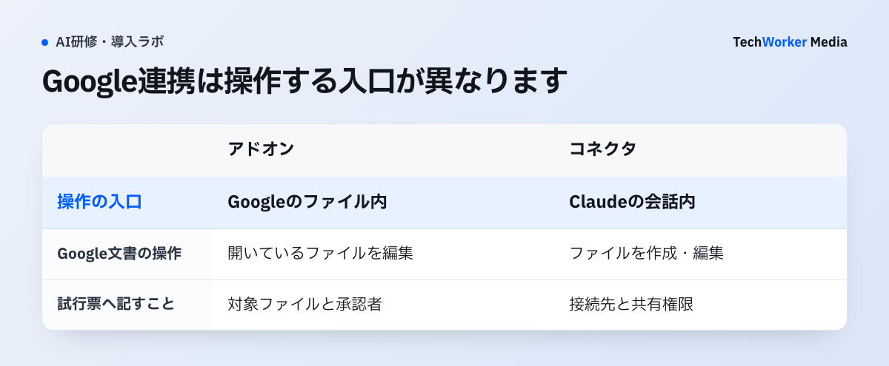
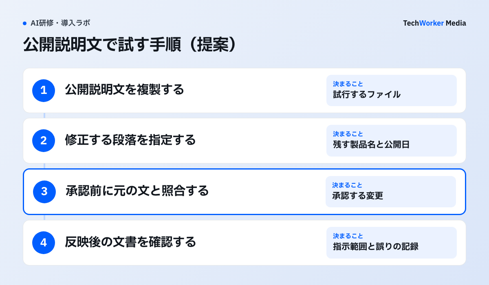

Google Docsで開いた文書を、その場でClaudeに直してもらえます。Anthropicは2026年10月6日、この新しいアドオンを発表しました。Docs、Sheets、Slidesが対象で、全有料プランに提供されます。
Claude for Google Workspace™ is now in public beta on all paid Claude plans.
日本語訳 Claude for Google Workspace™は、すべての有料Claudeプランで公開ベータとして利用できるようになりました。
文書の横で編集するアドオンと、Claudeから使うコネクタ
アドオンは、Googleのファイル内にClaudeのサイドバーを置きます。開いた文書や表、スライドを読んで、その場で編集します。他のDriveファイルを直接開く機能はありません。添付・貼り付け、有効なコネクタ、Web検索で渡す情報は別途確認します。公式利用ガイド

同時に発表されたDocs、Sheets、Slidesコネクタは、Claudeの会話から使います。Googleファイルの作成・編集に対応し、既存の共有権限が適用されます。TeamとEnterpriseでは、所有者による組織側の有効化が必要です。コネクタの公式ガイド
この違いは、社内の利用申請にも書いておきます。「ClaudeのGoogle連携を許可」という申請だけでは、使う機能が特定できません。試行票に、入口の名前と有効にするコネクタを記す運用を推奨します。
日本はClaudeの提供対象地域です。アドオンには、有料Claude契約とアプリの導入が許可されたGoogleアカウントが必要です。日本語の編集品質や、自社環境での動作は個別に確かめます。提供地域、公式利用ガイド
試すファイルと、編集を確かめる人を先に決める
アドオンの既定は、編集前に確認する「Ask before edits」です。通常の内容編集を続けて適用するモードもあります。Docsの編集は直接反映され、コメントの読み取り・返信・解決には対応しません。既存の提案の承認・却下もできません。公式利用ガイド
試行では、編集前の確認を維持することを推奨します。承認カードを押す人には、変更内容を判断できる業務担当者を置きます。情シスだけで数式や契約文の正しさを確かめる運用は避けます。
導入範囲は、Google Workspaceの管理者が確認します。管理者はMarketplaceから、特定のグループや組織部門を選んでアドオンを配布できます。公式利用ガイド
最初の対象には、公開情報を使った社内説明文が適しています。文書の複製を用意し、直してよい見出しと本文を指定します。原本への反映は、担当者が試行結果を確認してから行います。
ただし、対象の一段落を指定しても、アドオンが読む範囲をそこだけに制限したとは扱えません。試行用ファイル全体を確認し、送ってよい情報だけを入れます。別タブや末尾に顧客名が残っていないかも点検します。
部署へ伝えるルールは、「機密情報を入れない」の一言で終わらせません。顧客との未公開契約、社員の個人情報、認証情報など、今回の試行で扱わない情報を具体的に書きます。既存の社内規程に例外がある場合は、その承認手順を使います。
保存条件は、普段のClaude契約と照合する
入力と出力は、例外を除き30日以内にAnthropicのシステムから削除されます。アドオンは組織の独自保存期間を引き継がず、データを保存しないZDRにも対応しません。ブラウザ内の会話履歴は別に保存され、サイドバーの設定から消します。公式利用ガイド
「30日で必ず消える」と社内に説明するのは避けます。参照先の保存方針には、法令対応や利用ポリシー違反への対応などの例外があります。対象の契約と、試行で扱うデータに照らして確認します。Anthropicの組織向け保存方針
試行票には、対象ファイルの情報区分、許可する編集、承認者、保存条件を記します。特に保存を認めない情報は、今回のアドオン試行から外します。通常のチャットで承認済みという理由だけで、対象を広げません。
試行例：社内説明文を直し、変更を確かめる
以下は、導入前に使う試行例の提案です。TechWorkerが、この新機能で実施した事例ではありません。

公開済みの製品説明を、社内勉強会向けに短くする課題を用意します。Google Docsの複製には、製品名、公開済みの機能、確認日を記載します。社外へ出していない販売計画は入れません。
依頼文は、修正する段落と残す情報を具体的にします。たとえば「第2段落を短くしてください。製品名と公開日を残し、新しい機能や効果は足さないでください」と指示します。これは提案する課題文で、成功を確認した指示ではありません。
業務担当者は、承認前の変更案と元の文章を照合します。日付や対象プランが変わっていないかを確認します。承認後は実際の文書を読み、指示した範囲に収まったかを記録します。作業時間の短縮は、自社で測定してから判断します。
当社では、今回のアドオンとコネクタの実機検証はまだ行っていません。この記事は、2026年10月7日に確認した公式資料に基づきます。ベータの仕様が変わった場合は、導入前に公式ガイドを再確認してください。
生成AI研修の相談では、対象業務に合わせた課題と、変更を確認する手順を扱います。
出典と確認範囲
仕様の確認日：2026年10月7日。導入・利用は公式手順に基づく説明で、自社では未検証です。
- Anthropic：Claude now works with Google Docs, Sheets, and Slides（2026年10月6日発表）
- Claude Help Center：Google Workspaceアドオンの利用ガイド（確認時の現行仕様。更新日の確定値は未取得）
- Claude Help Center：Google Workspaceコネクタ（確認時の現行仕様。更新日の確定値は未取得）
- Claudeの提供地域（2026年3月16日）
- Anthropic：組織データの保存方針（2026年7月1日）